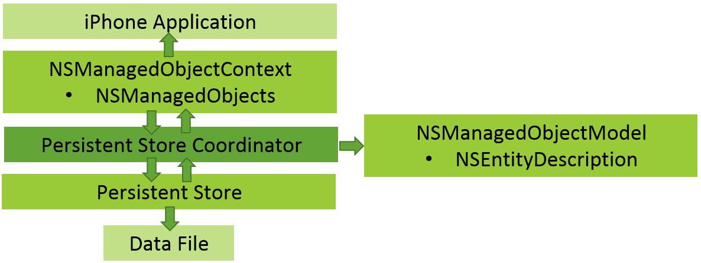
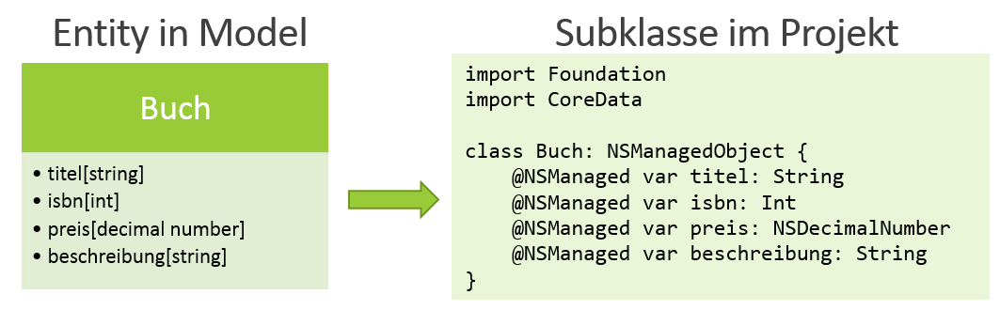
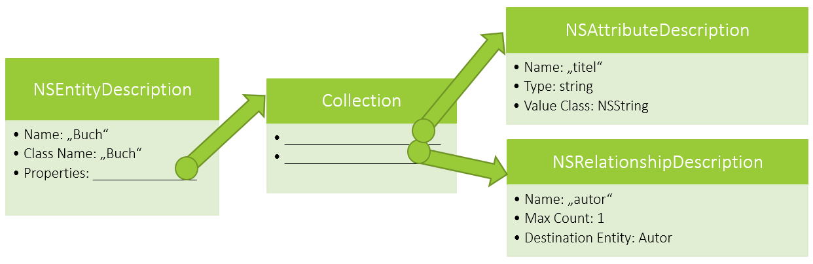

Einblick in Core Data
Einführung
Eines der mächtigsten und am häufigsten verwendeten Frameworks in der iOS-Entwicklung ist Core Data. Mit Core Data liefert Apple ein Framework, das auf objektorientierte Art und Weise die Daten mithilfe von SQLite persistent abspeichert und in der App verwaltet.
Eines der wichtigsten Grundsätze von Core Data sollte am Anfang klargestellt werden, wenn es um die Frage geht, was Core Data eigentlich genau ist: Core Data ist keine Datenbank im herkömmlichen Sinne. Das Framework liefert passende objektorientierte Klassen aus einem vorher erstellten Model, um über die Klassen zu arbeiten und entsprechende Inhalte in der Datenbank abzuspeichern und auszulesen. Daraus schlussfolgernd bekommt man als Entwickler nicht viel vom Datenbank-Backend mit, sondern beschäftigt sich lediglich mit den eigens erstellten Model-Klassen.
Architektur
Um Core Data zu nutzen, werden im Projekt einige Objekte benötigt, um die entsprechenden Funktionsweisen umsetzen zu können. Die Objekte mit Ihren zugehörigen Klassen werden im Folgenden vorgestellt.
Wichtigste Bestandteile der Architektur von Core Data
NSManagedObject
Die NSManagedObject-Klasse stellt eine Repräsentation einer Entity aus dem Model dar. Im Projekt wird mit dieser Subklasse von NSManagedObject gearbeitet. Für jede einzelne Entity, die im Model erstellt wurde, wird eine Subklasse angelegt. Die Subklassen müssen erzeugt werden, andernfalls kann man nicht das erstellte Model verwenden.
Vom Entity zur NSManagedObject-Klasse
NSManagedObjectContext
Der Kontext ist für das Speichern oder Verwerfen der Änderungen an den NSManagedObjects zuständig. Wird beispielsweise ein Attribut des NSManagedObjects geändert, steht diese Änderung zu diesem Zeitpunkt nicht fest in der Datenbank. Erst wenn das NSManagedObjectContext-Objekt seine save-Methode aufruft, werden die Änderungen in der Datenbank gesichert und sind dementsprechend nach einem Neustart der App noch vorhanden. Genauso können die Änderungen der NSManagedObjects über das NSManagedObjectContext auch verworfen werden.
Das NSManagedObjectContext beinhaltet also die erzeugten NSManagedObject-Klassen. In den meisten Szenarien reicht ein NSManagedObjectContext aus. Core Data unterstützt aber auch die Nutzung von mehreren Kontexten, wenn dies für fortgeschrittene Anwendungen notwending ist. Es ist wichtig zu erwähnen, dass das NSManagedObjectContext seine NSManagedObjects kennt und jeder NSManagedObject kennt seinen NSManagedObjectContext.
NSEntityDescription
Die Klasse NSEntityDescription liefert Metadaten über eine Entity. Die Metadaten beinhalten den Entity-Namen, den Klassen-Namen (dieser muss nicht zwangsweise der gleiche Name sein), und ihre Attribute und Relationships. Die Attribute und Relationships sind wiederum Attribute- oder RelationshipDescriptionObjects. Die folgende Abbildung zeigt den Aufbau einer NSEntityDescription:
Aufbau einer NSEntityDescription-Klasse
NSManagedObjectModel
Das Model bildet die Struktur und den Aufbau der Datenbank. Das NSManagedObjectModel beinhaltet die NSEntityDescription-Klassen und weiß somit, welche Entities vorhanden sind und wie die Verbindungen (Relationships) zueinander aufgebaut sind. Das Model wird benötigt, um darüber die eigentliche Verbindung zur Datenbank herzustellen.
Das Model wird in der Regel über Dateien mit der Endung “xcdatamodelId” erstellt. Für diese Dateien bietet XCode eine grafische Oberfläche, die es dem Entwickler erlaubt, das Model mit Ihren Entities, Attributen und Relations zu bilden.
NSPersistentStore
Der Store ist eine abstrakte Basisklasse zur Abbildung des Datenbanktyps. Neben SQL unterstützt Core Data auch andere Formate, um die Daten persistent zu halten (z.B. XML).
NSPersistentStoreCoordinator
Der NSPersistentStoreCoordinator stellt die Verknüpfung zwischen einem NSPersistentStore und einem NSManagedObjectModel her. Dies ist notwendig, da eine Anwendung aus mehreren NSPersistentStores und NSManagedObjectModels bestehen kann. Durch die Verknüpfung kann der NSManagedObjectContext seine Änderungen in der Datenbank vornehmen oder überhaupt auf die Informationen zugreifen.